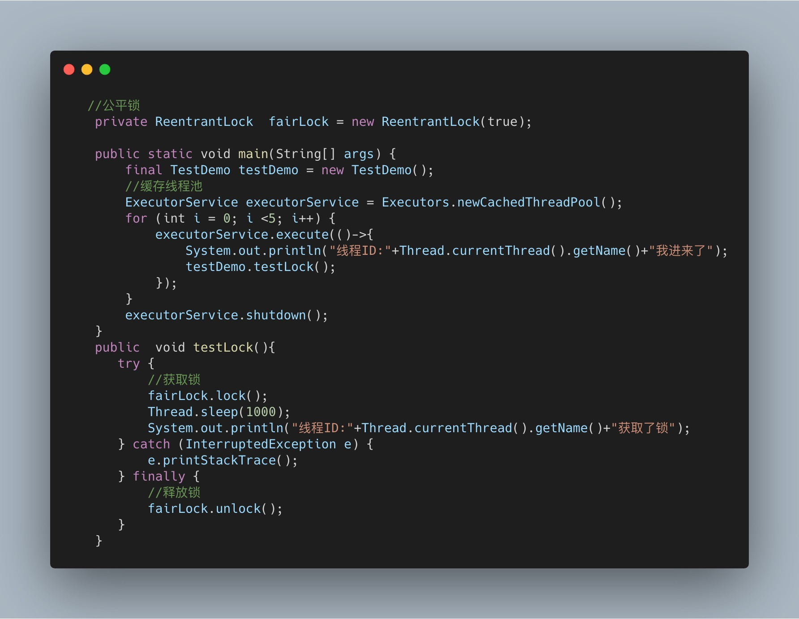

原文连接:https://www.cnblogs.com/Scramblecode/p/11570608.html
这次我们来看锁
说到了锁我们经常会联想到生活中的锁，在我们日常中我们经常会接触到锁。比如我们的手机锁，电脑锁，再比如我们生活中的门锁，这些都是锁。
锁有什么作用呢？
说了这么多还是不清楚锁到底有什么用处？这一点就要深思我们为什么要使用锁，我们用手机锁是为了保障我们的隐私安全，使用门锁是为了保障我们的财产安全，准确的来说我们使用锁就是为了安全。
那么在生活中我们可以加锁来保障自己的隐私和财产安全，那Java中的锁有什么用处呢？
Java中的锁
Java中的锁准确的来说也是为了保证安全，不过不同的是Java中的锁是为了保证并发所需要的。所以在Java中加锁准确的来说是为了保证并发安全，同时也是为了解决内存中的一致性，原子性，有序性三种问题。在Java中提供了各式各样的锁，每种锁都有其自身的特点和适用范围。所以我们都要熟悉锁的区别和原理才能正确的使用。
乐观锁和悲观锁
悲观锁
乐观锁和悲观锁的话在之前我刚刚开始写的时候就写过相关的文章，在这里就重新介绍一下吧。
悲观锁如其名它是悲观的，它觉得每次访问数据都可能被其他人(线程)修改，所以在访问资源的时候就会对资源进行加锁，用这种方式来保证资源在访问的时候不会被其他线程修改。这样的话其他线程想要获取资源的话就只能阻塞，等到当前线程释放锁后在获取。在Java中悲观锁的实现有synchronized关键字和Lock的实现类都是悲观锁。我们来看一下悲观锁到底是怎么执行的。
线程A抢占到资源后线程B就陷入了阻塞中,然后就等待线程A释放资源。
当线程A释放完资源后线程B就去获取锁开始操作资源˛悲观锁保证了资源同时只能一个线程进行操作。
乐观锁
与悲观锁相反，乐观锁并不会觉得访问数据的时候会有人修改(所以它是乐观的)，所以在访问资源的时候并不会上锁，但是在提交的时候回去判断一下是否有人修改了当前数据，在数据库中我们可以使用version版本号去实现。在Java中我们是使用CSA来实现。我们看一下乐观锁的执行过程
CAS
CAS(Compare And Swap)算法是一种无锁算法，是Java提供的非阻塞原子性操作。在不使用锁的情况下实现多线程下的同步。在并发包中(java.util.concurrent)原子性类都是使用CAS来实现乐观锁的。CAS通过硬件保证了比较更新的原子性，在JDK中Unsafe提供了一系列的compareAndSwap*方法，这里就不深究Unsafe这个类了。
CAS操作过程就是将内存中的将要被修改的数据与预期的值进行比较，如果这两个值相等就修改值为新值，否则就不做操作也就是说CAS需要三个操作值：
- 预期值的 A
- 内存中的V
将要修改的B
简单的来说CAS就是一个死循环，在循环中判断预期的值和内存中的值是否相等，如果相等的话就执行修改，如果如果不相等的话就继续循环，直到执行成功后退出。
CAS的问题
CAS虽然很牛逼但是它也存在一些问题比如ABA问题，举个例子，现在有内存中有一个共享变量X的值为A，这个时候出现一个变量想要去修改变量X的值，首先会获取X的值这个时候获取的是A，然后使用CAS操作把X变量修改成B。这样看起来是没有问题，那如果在线程1获取变量X之后，执行CAS之前出现一个线程2把X的值修改成B然后CAS操作执行又修改成了了A，虽然最后执行的结果共享变量的值为A但是此A已经不是线程1获取的A了。
这就是经典的ABA问题。产生ABA问题是因为变量的状态值发生了环形转换，A可以到B，B可以到A，如果A到B，B到C就不会发生这种问题。解决办法:在JDK1.5后加入了AtomicStampedReference方法给每个变量加入了一个时间戳来避免ABA问题。
同时CAS还有循环开销大的问题，因为会一直循环直到预期和内存相等修改成功。同时还有只能保证一个共享变量的原子性的问题不过在JDK1.5之后加入了AtomicReference类来保证引用对象之间的原子性。使用悲观锁和乐观锁
可以使用synchronized关键字来实现悲观锁，乐观锁可以使用并法包下提供的原子类。
公平锁和非公平锁
上面说了悲观锁和乐观锁，现在来看公平锁和非公平锁。在锁中也是有公平和不公平滴，公平锁如其名讲究的是一个公平，所以多个线程同时申请申请锁的话，线程会放入一个队列中，在队列中第一个进入队列的线程才能获取锁资源，讲究的是先到先得。就比如我们在学校食堂打饭的时候，那个时候记得我同学一放学就赶快去食堂排队这样的话才能尽快的打上饭，而且在排队的过程中并不会有人吃不到饭，这个时候食堂阿姨是公平的每个人排队的话都能吃到饭，线程也是如此。非公平锁可以这样理解，我那个同学去食堂排队打饭了但是有人却插队，食堂阿姨却不公平直接给插队的人打饭却不给他打，你说气不气是不是很不公平，划重点非公平锁先到不一定先得。不过公平锁也是有缺点的，当一个线程获取资源后在队列中的其他的线程就只能在阻塞，CPU的所以公平锁比非公平锁的效率要低很多。因为CPU唤醒阻塞线程的开销比非公平锁大。我们来看一个一个例子：
在Java中ReentrantLock提供了公平锁和非公平锁的实现。看一下ReentrantLock怎么实现公平锁和非公平锁
使用公平锁和非公平锁
ReentrantLock默认就是非公平的锁，我们来看一下公平锁的例子：

看一下输出结果：
我们可以看到公平锁的输出结果是按照顺序来的，先到先得。
在看一下非公平锁的例子：
输出结果：
我们可以看到如果使用非公平锁的话最后输出的结果是完全没有顺序的，先到不一定先得。
所以在使用公平锁的时候线程1获取到锁之后线程2在请求锁的话就会挂起等待线程1释放锁，然后线程2才能获取锁。如果再有一个线程3想要请求锁的话，这时候如果使用的是非公平锁，那么线程2和线程3中两个有一个会获取到锁，公平锁的情况下线程3只能先挂起，等待线程2获取锁资源释放后在获取。
什么时候使用公平锁和非公平锁
在需要公平资源的场景下使用公平锁，如果不需要特殊的公平对待的话尽量使用非公平锁，因为公平锁会带来性能的开销。
独占锁和共享锁
看到独占和共享会联想到什么，对的独占锁就是每次只有一个线程能霸占这个锁资源，而其他线程就只能等待当前获取锁资源的线程释放锁才能再次获取锁，刚刚上面的ReentrantLock就是独占锁，那这样看来独占锁不也就是悲观锁吗？因为悲观锁抢占资源后就只能等待释放其他线程才能再次获取到锁资源。其实准确的说独占锁也是悲观锁。
在谈共享锁，共享锁其实也是乐观锁它放宽了锁的策略允许多个线程同时获取锁。在并发包中ReadWriteLock就是一个典型的共享锁。它允许一个资源可以被多个读操作访问，或者被一个 写操作访问，但两者不能同时进行。
自旋锁
什么是自旋锁，自旋锁其实就是当一个线程获取锁的时候，这个锁已经被其他人获取到了那么这个线程不会立马挂起，反而在不放弃CPU使用权的情况下会尝试再次获取锁资源，默认次数是10次，可以使用-XX: PreBlockSpinsh来设置次数。如果自旋锁获取锁的时间太长，会造成后面的线程CPU资源耗尽释放。并且自旋锁是不公平的。
优点
自旋锁不会使线程状态发生切换，一直处于用户态，即线程一直都是active的；不会使线程进入阻塞状态，减少了不必要的上下文切换，执行速度快。
生活中有各种意想不到的状况，Java中也有各种意想不到的异常，下次我们聊聊Java中的异常，欢迎转发关注